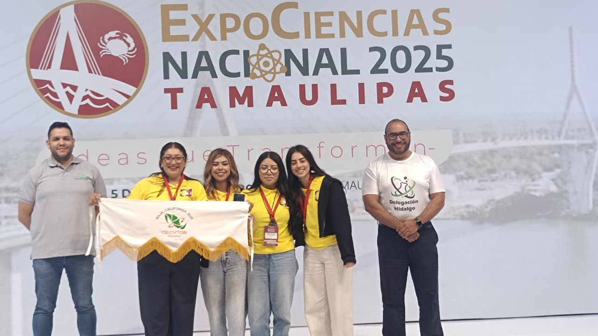

9 de diciembre de 2025

El Colegio de Estudios Científicos y Tecnológicos del Estado de Baja California Sur (CECyTEBCS) celebra con orgullo la destacada participación del Plantel CECyT 06 Vizcaíno en la Expociencias Nacional 2025, realizada en el estado de Tamaulipas, donde el proyecto "Blue Roots: Macetas ecológicas a base de residuos textiles de mezclilla" obtuvo la acreditación para representar a México en el MILSET ExpoCiencias Europe Italia 2026.
El proyecto fue desarrollado por las alumnas Nereyda Yarmileth Librado Santiago, Alondra Tovar Llanes y Evelyn Alejandra Zavala Mendoza, bajo la asesoría de la QFB. Nancy Lizet López Guerra. "Blue Roots" nace como una respuesta al impacto ambiental que generan los residuos textiles, especialmente los provenientes de mezclilla, cuya baja tasa de reciclaje, alto consumo de agua y relación con la moda rápida han intensificado la contaminación global.
Ante esta problemática, las estudiantes diseñaron un prototipo de maceta ecológica elaborada con residuos de mezclilla, utilizando un aglutinante biodegradable y aguas grises provenientes del hogar, con el objetivo de reducir desechos, fomentar la reutilización y contribuir a mitigar los efectos del cambio climático.
Esta acreditación es otorgada por MILSET, organismo internacional que impulsa la participación científica juvenil en escenarios globales, fortaleciendo el alcance y proyección del talento estudiantil del CECyTEBCS.
En su mensaje, el Director General del CECyTEBCS, Vladimir Torres Navarro, expresó su reconocimiento: "Este logro refleja el espíritu de una educación que se construye desde la colaboración, la creatividad y la conciencia social. Cuando nuestras y nuestros estudiantes trabajan acompañados por sus docentes y reciben el respaldo de sus comunidades, las ideas se vuelven soluciones y los sueños se vuelven oportunidades. Blue Roots demuestra que la ciencia, cuando nace desde la escuela y desde la comunidad, puede cambiar el futuro."
El CECyTEBCS reconoce el talento, esfuerzo y dedicación del equipo del CECyT 06 Vizcaíno, reafirmando su compromiso con una educación integral que impulse proyectos con impacto social y ambiental, y que coloque a las juventudes sudcalifornianas en escenarios nacionales e internacionales de alto nivel.
#CECyTEsComunidad #BCSNosUne